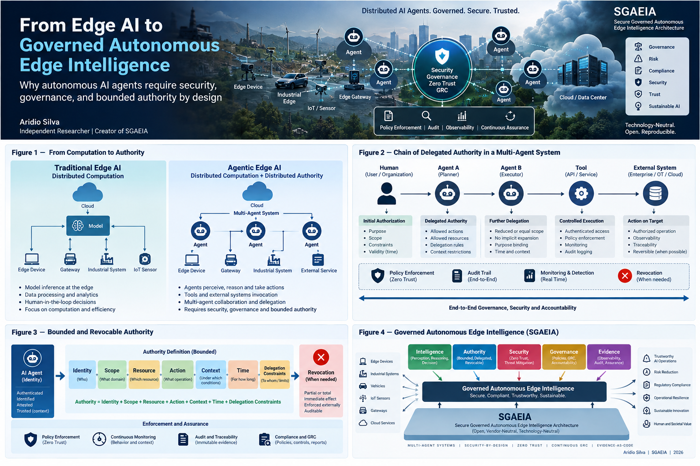
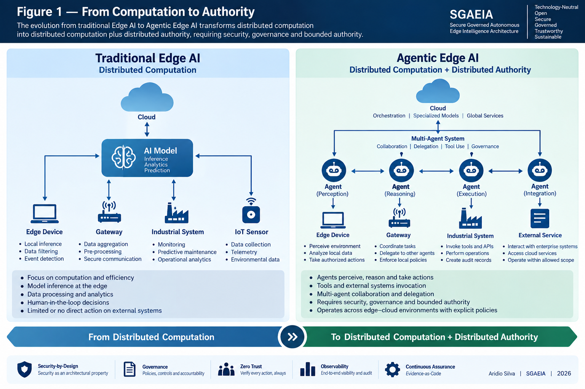
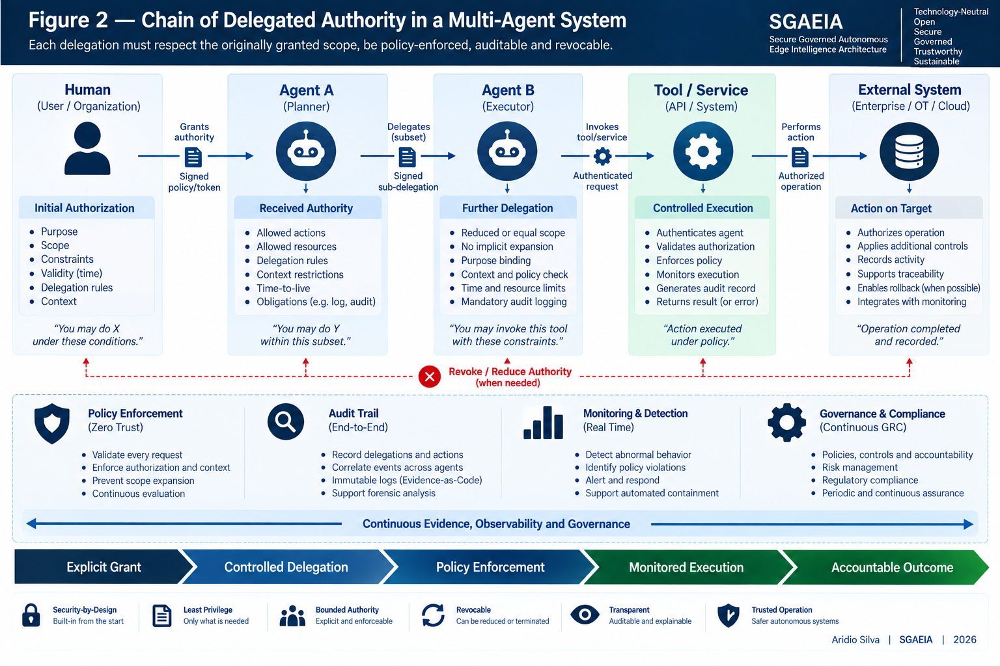
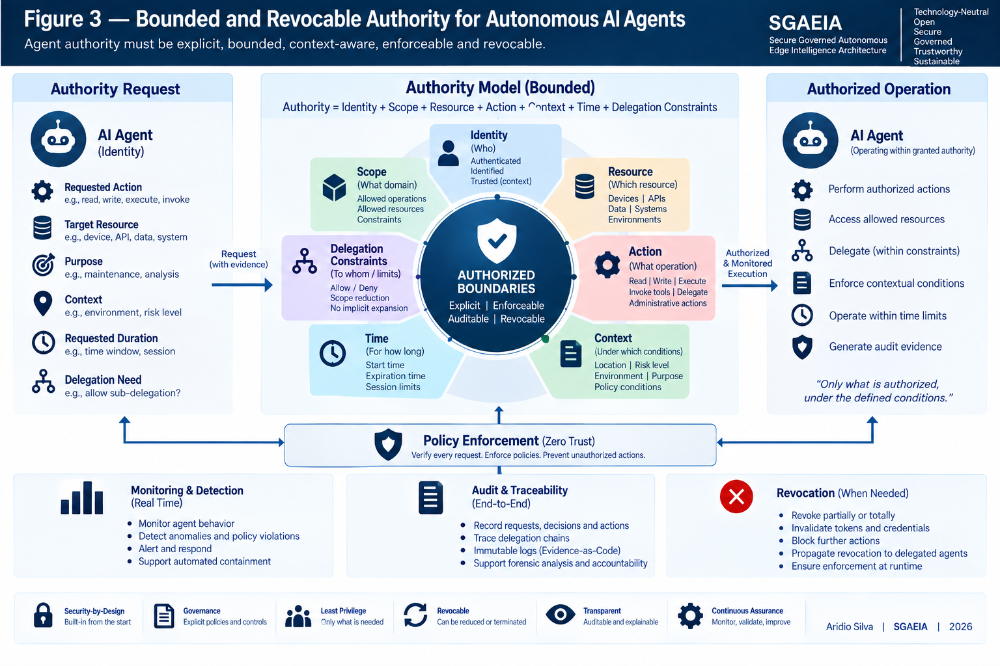
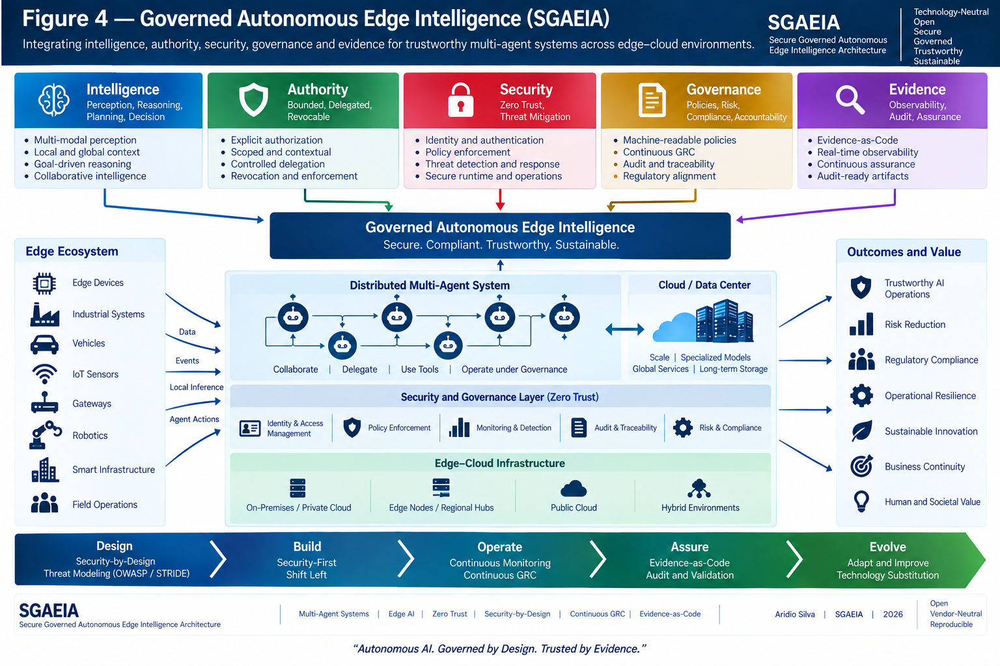

Complete public article
This English edition preserves the complete public article published by Aridio Silva, including its abstract, sections, figures, captions, references, author information, resources, and license.

Figures




Suggested citation
Silva, Aridio. (2026). From Edge AI to Governed Autonomous Edge Intelligence. Zenodo. https://doi.org/10.5281/zenodo.22715250
This page is the canonical open reading edition of the complete English article. Zenodo remains the persistent source for the archived PDF, citation, version, and license information.